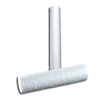

Depth Cartridges
Harrington is a supplier of high quality depth cartridges. We carry a wide range of brands, styles, material types, and more. Depth cartridges are widely employed in industries such as chemicals, oil and gas, automotive, and mining, where high dirt-holding capacity and efficient removal of larger particles are essential. Select your product to request a quote, get additional information and purchasing options.

Veolia Hytrex Depth Filter, 10 Micron, 10" Length, 222/Closed End with Silicone Sealsper EA · Sign in for price- Veolia Hytrex Depth Filter, 10 Micron, 12" Length, Plain End with No Gasket Sealsper EA · Sign in for price
- Veolia Hytrex Depth Filter, 10 Micron, 19-1/2" Length, Plain End with No Gasket Sealsper EA · Sign in for price
- Veolia Hytrex Depth Filter, 10 Micron, 20" Length, Plain End with No Gasket Sealsper EA · Sign in for price
- Veolia Hytrex Depth Filter, 10 Micron, 20" Length, 222/Closed End with Silicone Sealsper EA · Sign in for price
- Veolia Hytrex Depth Filter, 10 Micron, 20" Length, Plain End with No Gasket Sealsper EA · Sign in for price
- Veolia Hytrex Depth Filter, 10 Micron, 20" Length, Plain End/Self Seal Spring with No Gasket Sealsper EA · Sign in for price
- Veolia Hytrex Depth Filter, 10 Micron, 20" Length, Double Open End Gasket with Santoprene Sealsper EA · Sign in for price
- Veolia Hytrex Depth Filter, 10 Micron, 29-1/4" Length, Plain End with No Gasket Sealsper EA · Sign in for price
- Veolia Hytrex Depth Filter, 10 Micron, 29-1/4" Length, Plain End/Self Seal Spring with No Gasket Sealsper EA · Sign in for price
- Veolia Hytrex Depth Filter, 10 Micron, 30" Length, Plain End with No Gasket Sealsper EA · Sign in for price
- Veolia Hytrex Depth Filter, 10 Micron, 30" Length, 222/Fin with Silicone Sealsper EA · Sign in for price
- Veolia Hytrex Depth Filter, 10 Micron, 30" Length, 222/Closed End with EPDM Sealsper EA · Sign in for price
- Veolia Hytrex Depth Filter, 10 Micron, 30" Length, 222/Closed End with Silicone Sealsper EA · Sign in for price
- Veolia Hytrex Depth Filter, 10 Micron, 30" Length, 222/Closed End with FKM Sealsper EA · Sign in for price
- Veolia Hytrex Depth Filter, 10 Micron, 30" Length, 226/Fin with Silicone Sealsper EA · Sign in for price
- Veolia Hytrex Depth Filter, 10 Micron, 30" Length, 226/Closed End with Silicone Sealsper EA · Sign in for price
- Veolia Hytrex Depth Filter, 10 Micron, 30" Length, Plain End with No Gasket Sealsper EA · Sign in for price
- Veolia Hytrex Depth Filter, 10 Micron, 30" Length, Plain End/Self Seal Spring with No Gasket Sealsper EA · Sign in for price
- Veolia Hytrex Depth Filter, 10 Micron, 30" Length, Double Open End Gasket with Santoprene Sealsper EA · Sign in for price
- Veolia Hytrex Depth Filter, 10 Micron, 3-7/8" Length, Plain End with No Gasket Sealsper EA · Sign in for price
- Veolia Hytrex Depth Filter, 10 Micron, 39" Length, Plain End with No Gasket Sealsper EA · Sign in for price
- Veolia Hytrex Depth Filter, 10 Micron, 40" Length, Plain End with No Gasket Sealsper EA · Sign in for price
- Veolia Hytrex Depth Filter, 10 Micron, 40" Length, 222/Fin with Buna-N Sealsper EA · Sign in for price
- Veolia Hytrex Depth Filter, 10 Micron, 40" Length, 222/Fin with Silicone Sealsper EA · Sign in for price
- Veolia Hytrex Depth Filter, 10 Micron, 40" Length, 222/Closed End with EPDM Sealsper EA · Sign in for price
- Veolia Hytrex Depth Filter, 10 Micron, 40" Length, 222/Closed End with Silicone Sealsper EA · Sign in for price
- Veolia Hytrex Depth Filter, 10 Micron, 40" Length, Plain End/Self Seal Spring with No Gasket Sealsper EA · Sign in for price
- Veolia Hytrex Depth Filter, 10 Micron, 40" Length, Double Open End Gasket with Santoprene Sealsper EA · Sign in for price
- Veolia Hytrex Depth Filter, 10 Micron, 4-7/8" Length, Plain End with No Gasket SealsCall for availabilityAsk a branch
- Veolia Hytrex Depth Filter, 10 Micron, 5" Length, Plain End with No Gasket Sealsper EA · Sign in for price
- Veolia Hytrex Depth Filter, 10 Micron, 500mm Length, Plain End with No Gasket Sealsper EA · Sign in for price
- Veolia Hytrex Depth Filter, 10 Micron, 50" Length, Plain End/Self Seal Spring with No Gasket Sealsper EA · Sign in for price
- Veolia Hytrex Depth Filter, 10 Micron, 9-3/4" Length, Plain End with No Gasket Sealsper EA · Sign in for price
- Veolia Hytrex Depth Filter, 10 Micron, 9-7/8" Length, Plain End with No Gasket Sealsper EA · Sign in for price
- Veolia Hytrex Depth Filter, 20 Micron, 10" Length, Plain End with No Gasket Sealsper EA · Sign in for price
- Veolia Hytrex Depth Filter, 20 Micron, 10" Length, 222/Fin with FKM Sealsper EA · Sign in for price
- Veolia Hytrex Depth Filter, 20 Micron, 10" Length, Double Open End Gasket with Santoprene Sealsper EA · Sign in for price
- Veolia Hytrex Depth Filter, 20 Micron, 12-1/2" Length, Plain End with No Gasket Sealsper EA · Sign in for price
- Veolia Hytrex Depth Filter, 20 Micron, 19-1/2" Length, Plain End with No Gasket Sealsper EA · Sign in for price